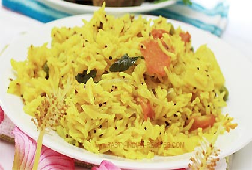

|  | Fried Paneer Rice is a treating grounding of paneer along with desired veggies prepared in the Chinese pulps and spices on the divan of Indian basmati long ounce rice. It is one of most standard of Indo Chinese Food. |
Ingredients : long grain rice 1-1/2 cup, paneer cubes 250 gms, onion big 1, carrot 1/2, cauliflower 1 cup, French beans 1 cup, spring onion 1 cup (green part), whole cumin 1/2 teaspoon (jeera), chillies 4 green, garlic minced 6 cloves, soy sauce 1/2 teaspoon, vinegar 1/2 teaspoon, ajino motto 1/4 teaspoon, 1/4 teaspoon pepper powder 1/4 teaspoon, vegetable oil, Salt as required Method : Soak the rice in water for around 20 minutes 3-4 cups. In the intervening time deep fry the chops of paneer till golden brown and abode on paper napkin to draining the oil. Simmer the rice in the similar water in which they were sopping add salt as required and greater the flame till rice gets boiled. Strain the cooked rice and keep apart. On the other sideways heat up a wok and 2 teaspoon of oil put then add cumin leave to crackle, not wait for born the cumic just wait for 2-3 crackles add more green chillies, minced ginger wait for a mint add French beans, cauliflower, onion and carrot add salt as required, ajino motto, pepper powder and soy sauce. Mix it well. Heat for 3-4 mint on high flame by rousing recurrently put fried paneer mix it add vinegar heated rice mix all things well. Heat 2mint more and Serve with garnish green spring onions.
|
||||

Crispy Pizza
Crispy Pizza and Pressed Panini authentic recipe One of the very famous Street Italian food.
Golden Chicken
Crispy and curried Golden chicken recipe for cooking Golden Chicken ghastly.